最近事情比较多，又懒惰了，继续学习。
分类问题
什么是分类问题，例如：
垃圾邮件分类，恶性肿瘤预测。
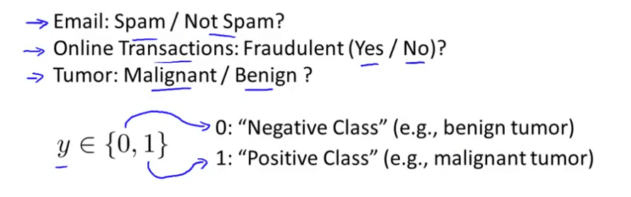在分类问题中一般结果是0和1，1称为正样本或正类，0称为负样本或负类。
首先讲解的是简单的两变量分类问题
使用线性回归的方式解决分类问题如何？
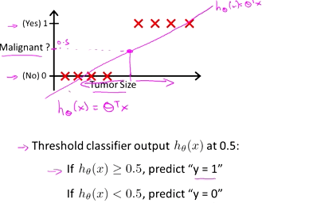
如果是上图这样的例子来看，使用线性回归的方式貌似可以解决分类问题，但是如果存在一个严重偏差的特征时，使用线性回归拟合分类问题就会出现严重的偏差，在分类问题中最终的结果只有0和1，但是在线性回归中会出现小于1和大于0的结果。
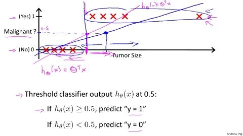
所以使用线性回归的方式不能很好的处理分类问题，于是引出了另一种模型，逻辑回归（逻辑回归的叫法是历史原因，和回归并没有什么关系）
逻辑回归
什么样的数学模型适合回归问题呢？一个只会在0与1中间震荡的函数模型：
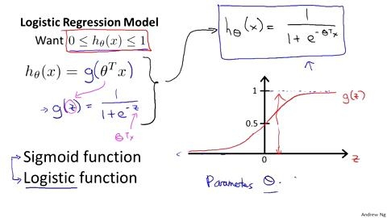
其中：
x,表示的是特征向量
g，代表逻辑函数(Logistic function)是一个常用的曲线函数(Sigmoid function),表达式为：
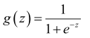
函数的图像就如上图所示。
h,表示的就是逻辑回归，带入到函数g中，最终得到的表达式就是
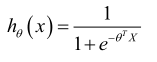
函数h表示的就是当输入特征X时，根据输入的特征计算输出变量Y=1的可能性。假设h(x)=0.7,表示的就是患有恶性肿瘤的概率为0.7
判定边界(Decision Boundary)
判定边界能够让我们更好的理解逻辑回归和假设函数在计算什么
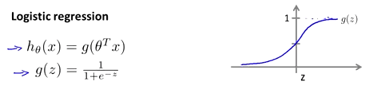
上图就是逻辑回归的函数和图像，看一下数学意义：1
2
3
4
5
6当h >= 0.5时,预测结果 y = 1，
当h < 0.5时，预测结果 y = 0,
所以：
当 y = 1 时，h(x) = g(z) >= 0.5
那么 z >= 0,也就是θtX>=0;
当y=0时，最后得到θtX<0。
具体看下面这个例子
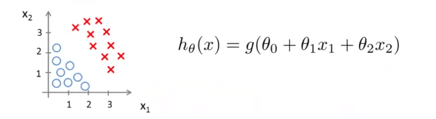
其中的theta的参数分别为-3,1,1
存在如上图所示的数据以及表示函数,如果要预测y=1的概率，最后得到的表达式为：
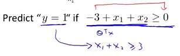
最后得到的结果很明显是一个过（0,3）（3,0）的直线：
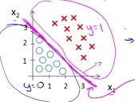
其中的方程就是一个判定边界，通过这条线就可以分辨出正样本和负样本了。
除了这种线性的判定边界之外，还有一些其他形状的判定边界，如圆形。
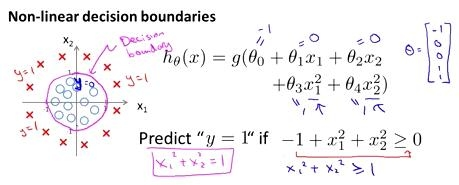
逻辑回归中的代价函数
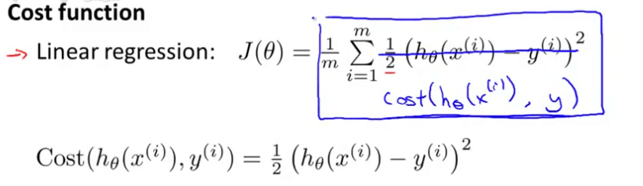
上面就是之前讲过的线性回归中的代价函数，这个代价函数在线性回归中能够很好地使用，但是在逻辑回归中却会出现问题，因为将逻辑回归的表达式带入到h函数中得到的是一个非凸函数的图像，那么就会存在多个局部最优解，无法像凸函数一样得到全局最优解。示例如下。
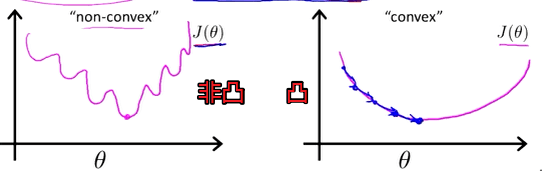
所以在逻辑回归中需要重新定义代价函数：
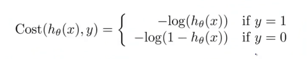
最后得到的函数h和Cost函数之前的关系如下：
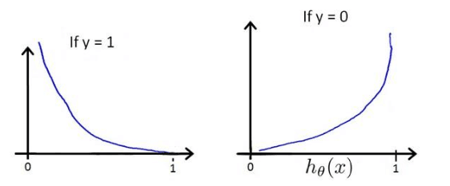
构建一个这样的函数的好处是在于，当y=1时，h=1，如果h不为1时误差随着h的变小而增大；同样，当y=0时，h=0，如果h不为0时误差随着h的变大而增大。
代价函数中的梯度下降
在上一节中的逻辑回归中的代价函数中给出了代价函数的定义
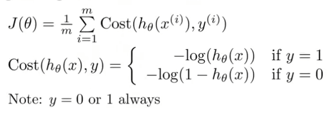
最后可以简化为:
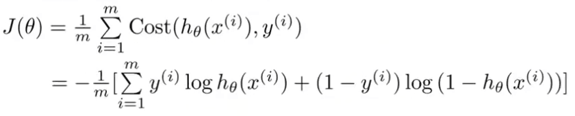
最终的求解问题就是要求回归函数的值最小，那么同样可以使用在线性回归中所用到的梯度函数。
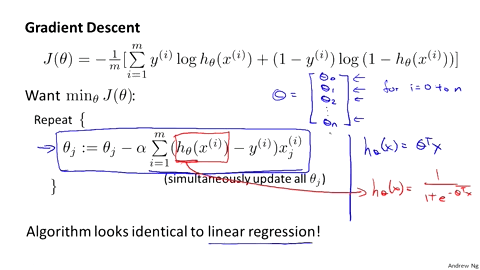
上图就是逻辑回归的梯度求解过程，虽然看起来和线性回归相似，但实则是完全不同的。在线性回归中，h函数为theta的转置与X的乘积，但是在逻辑回归中则不是。这样就导致了两者在运算方面和优化方面是完全不同的。但是在运行梯度下降算法之前，进行特征缩放依旧是非常重要的。
高级优化
优化算法除了讲到的梯度下降算法之外，还有一些叫做共轭梯度下降算法(BFGS,L-BFGS)。使用这些共轭梯度下降算法的好处在于，不需要手动地选择学习率a，这些算法会自行尝试选择a;比梯度下降算法运算更快。
一般情况下，在常见的机器学习算法库中都带有这些算法，不需要程序员手动实现这些算法。
多类别分类问题
现实世界中除了二元的分类问题还有多元的分类问题，例如邮件的类型有工作，朋友，家人，爱好等多种，分类到不同的文件夹下，如对天气的分类，是晴天、多云、小雨等等天气。
多元分类问题与二元分类问题的区别如下:
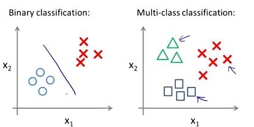
多元分类的思路与二元分类问题的解决思路是类似的。可以将多元问题变为两元问题，具体如下：
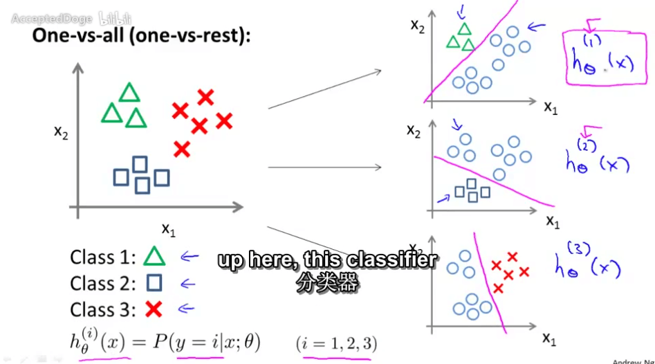
这样n元的分类问题，就会进行n次的机器学习的分类算法。对每一次的分类结果即为h(x)。那么经过n此分类之后，最后得到的结果为:
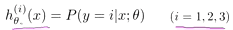
那么当输入新的训练集或者是变量X，只需要按照上面的思路进行分类，其中的h(x)的最大值就是对应的最后的分类结果。
总结
本章写完用了一周时间，但其实视频一天就看完了，博客内容基本是照抄别人的，关于具体的代码实现查看另一篇博客。